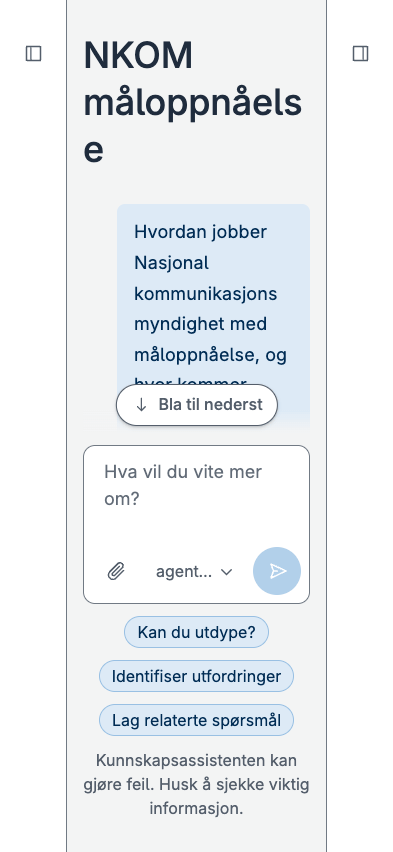
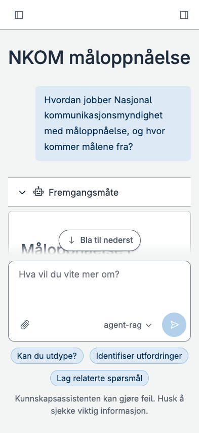
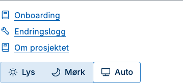
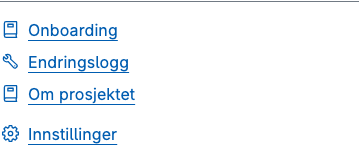
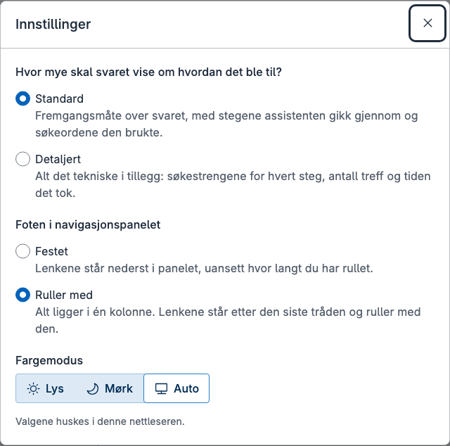
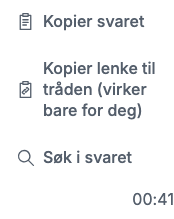
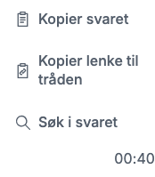
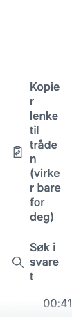
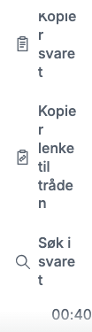
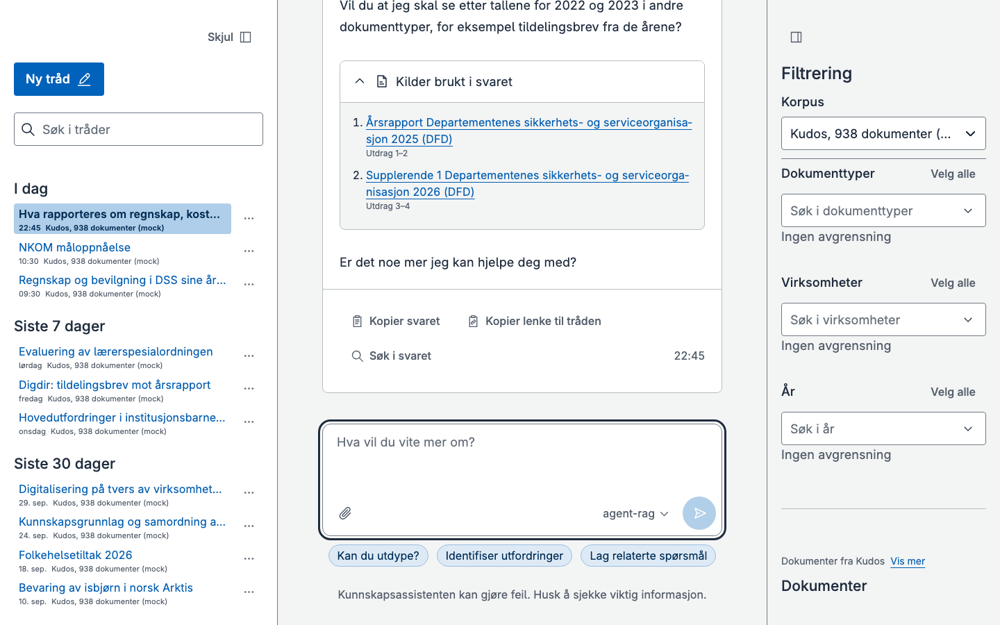

Avgjørelser og det som gjenstår før sammenslåingen
Oppfølging av rapporten fra 6. oktober. Først avgjørelsene som trengs, med skjermbilder. Så det som må gjøres i utkast-PR #129 før den åpnes for gjennomgang, og hvordan. Til slutt det som er gjort siden sist.
main 879f0de
Testmiljøet 879f0de
#129 0e28261,
alle sju sjekkene grønne
digdir/kunnskapsassistenten main 8639267
Kort fortalt
- Av de sju punktene fra 6. oktober er 1, 3, 4, 6 og 7 gjort, 5 er delvis gjort, og 2 er flyttet til etter sammenslåingen.
- Sju avgjørelser trengs. Den viktigste er om raden øverst skal være standard på telefon. Den løser flere av de andre problemene på smale skjermer på én gang.
- Før #129 åpnes: klienten bruker kontrakten fra pakken, det som bare hører til det frittstående repoet tas ut av kopien, PR-beskrivelsen skrives om, og git-krokene avklares med de som eier monorepoet.
- Siden kvelden 6. oktober: 18 PR-er er merget, og fire forsøk ligger bak flagg som er av som standard. Alt er ute i testmiljøet og med i #129.
Avgjørelser som trengs
Hver avgjørelse har det som er målt, valgene og en anbefaling. Trykk på et bilde for full størrelse. Bildene er tatt i mock, i lyst tema.
Raden øverst som standard på telefon?
Flagg: mobile-top-rowUten flagget står knappene for panelene som skinner på hver side, og hovedkolonnen får 186 px på 320 og 259 px på 393. Med flagget (#276, digdir#120) står knappene i en rad på 58 px øverst, og hovedkolonnen får hele bredden: 320 og 393 px.




Innstillingene synlige for alle?
PR #273, godkjent i gjennomgangenI #273 flyttes velgeren for lys, mørk og auto fra foten i navigasjonspanelet inn i innstillingene, og foten får lenken «Innstillinger» der velgeren sto. Foten blir 18 px lavere (163 til 145 px på 1440 og 390). Menyen monteres i skallet, så den virker på alle sider. Det gjør også visningsnivået og valget for foten synlige for alle. ADR 0004 sa at menyen skulle være skjult.






Hvor skal det stå at en delt lenke bare virker for deg?
PR #277 eller #278digdir#119: til innloggingen finnes, virker en lenke til en tråd bare i nettleseren den ble laget i. Det skal sies tydelig. To varianter er laget:
- #277, navnet: knappen heter «Kopier lenke til tråden (virker bare for deg)».
- #278, beskrivelsen: knappen heter som før. «Virker bare for deg, i denne nettleseren» står som hjelpetekst på knappen og i kvitteringen etter kopieringen.
| Bredde | I dag | #277 | #278 |
|---|---|---|---|
| 320 | 141 px | 224 px | 141 px |
| 360 | 78 px | 141 px | 78 px |
| 390 | 58 px | 78 px | 58 px |








Orddeling i overskrifter på smale skjermer?
For at ingenting skal rulle sidelengs (#270), brytes et ord som ikke får plass, midt i og uten bindestrek. Bildet uten raden
øverst i avgjørelse 1 viser det: «måloppnåels» og «e». Med automatisk orddeling (hyphens: auto) deler nettleseren ordet med bindestrek der den har ordlister for norsk. Målt i WebKit
(Safari) blir tittelen «NKOM mål-» og «oppnåelse» på 393, to linjer i stedet for tre.
Chromium uten ordlister deler ikke norsk, så e2e-testene (Chromium) kan ikke se om
orddelingen virker.
Innlogging med Entra ID foran testmiljøet
digdir#118. I dag er testmiljøet beskyttet av en hemmelighet i lenken. Malen for testmiljøet og serveren har innlogging med Microsoft fra før (innebygd innlogging i Container Apps), men den har aldri vært slått på, fordi det mangler en appregistrering.
- (a) Registreringen qa bruker. Eieren av registreringen, eller en administrator, gjør tre endringer: legger til adressen testmiljøet sendes tilbake til, slår på ID-tokens (Microsoft krever det for innloggingen i Container Apps), og lager en egen hemmelighet til testmiljøet. Etterpå kjøres malen én gang. Det er raskest.
- (b) En egen registrering. Riktigere etter boka, men den trenger samtykke fra en administrator i tenanten.
- (c) Vent til sammenslåingen. BFF-en i monorepoet logger inn med Entra selv. Når testmiljøet kjører den sammenslåtte appen, er saken løst uten noe som må kastes.
Med (a) eller (b) kommer alle i tenanten inn, med mindre «Tilordning påkrevd» slås på. Trådene følger da personen og ikke nettleseren, så gamle tråder vises ikke lenger i lista (de finnes fortsatt i backenden).
Filtrene over kildene i høyre panel: verdt å gå videre med?
Flagg: filters-right-panelMed flagget (#274, digdir#84) har navigasjonspanelet bare trådene, og høyre panel har filtrene over kildene. Uten et valgt filter er filteret ikke låst etter svaret, så alle kontrollene står der, og kildene havner under kanten på 1440. Med et valgt filter står det kort «Avgrenset til …», og dokumentene står rett under. Utdragene står under kanten også da.


Små avklaringer
- digdir#121 (skrivefeltet er høyere enn i skissen): et forsøk med knapperaden under, slik den står i en annen chat-app. Skjermbildene det ble vist til, kom ikke med.
- digdir#123 (foten): løst i #267 og utkvittert. Kan lukkes.
-
Årsfilteret med perioder (flagg
year-ranges): med bare ett siffer skrevet («2») står bare feilteksten i lista, og et klikk på den tømmer feltet. «20», «2024» og «2019-20» gir forslag som kan velges. Rettingen er under arbeid.
Gjenstår i #129 før PR-en åpnes
I denne rekkefølgen. Synken fra dette repoet stopper etter punkt 2, og etter det skjer arbeidet i monorepoet.
| # | Hva | Hvorfor | Hvordan | Omfang |
|---|---|---|---|---|
| 1 | Kontrakten fra pakken |
Klienten har en kopi av typene i packages/contract. Klient og server
skal sjekkes mot de samme typene (punkt 5 i rapporten fra 6. oktober).
|
Legg sources til ConversationDetail i pakken, la
klienten importere fra pakken, og slett kopien. De tre typene pakken ikke har
(svaret fra /api/models, svaret fra /api/me og lista
over tråder), legges til i pakken.
|
L |
| 2 | Det som bare hører til det frittstående repoet, ut av kopien |
Kopien i src/apps/web har med seg tynnserveren
(server/), live-modus (src/api/live),
deploy/, Dockerfile, .github/ og
dokumentasjonen for testmiljøet. I monorepoet er BFF-en serveren, og bildet og CI
ligger i rota.
|
Fjern dem i én commit, med testene som hører til. Klienten har da to moduser: mock
og bff. Dokumentasjonen for testmiljøet og for å kjøre live lokalt
(deploy.md, deploy-backend.md og
kjoremiljo-og-korpus.md) forsvinner også, og med den et filnavn med
personnavn som står der i dag.
|
M |
| 3 | PR-beskrivelsen | Den beskriver kopien fra 5. oktober. Den som går gjennom PR-en, ser bare den. | Skriv om til det grenen inneholder nå: klienten, endringene i BFF-en, arbeidsområdet, ADR-ene og det som er tatt ut, og hvordan alt er testet. | L |
| 4 | Git-krokene og npm 11 |
prepare i src/apps/web legger git-kroker for hele
monorepoet ved npm ci. npm 11.19 i CI melder at installasjonsskriptet
til simple-git-hooks ikke er dekket av allowScripts.
|
Avklares med de som eier monorepoet: krokene i rota for hele repoet, eller ingen kroker, og formatering og lint i CI. | L |
| 5 | Testmiljøet etter sammenslåingen | Testmiljøet bygges i dag fra dette repoet, med tynnserveren. Etter punkt 2 kan det ikke bygges fra #129. | Den sammenslåtte appen (BFF-en og klienten) rulles ut slik qa gjør, med innlogging i BFF-en. Da er avgjørelse 5 løst. Dette repoet får en peker til monorepoet og arkiveres, og digdir#124 lukkes. | M |
| 6 | Et personnavn i ADR 0001 i monorepoet | ADR-en er monorepoets egen og nevner en person ved navn som kilde til et sitat. | Foreslå en nøytral formulering til de som eier den, eller la den stå. | L |
Etter sammenslåingen
- Lenken til tilbakemelding under svaret (punkt 2 fra 6. oktober) tenkes nytt.
- Mellom-bruddpunktet for kolonnene (nettbrett): vurder å droppe det. Det er usikkert om kolonnene fungerer godt mellom telefon og desktop.
- Forsøkene bak flagg avgjøres, og flaggene tas bort: raden øverst (digdir#120), årsfilter med perioder og samlede merkelapper (digdir#115 og #116), og filtrene i høyre panel (digdir#84).
- Kildene per svar etter ny innlasting venter på at backenden lagrer bitene (headless-rag #21).
- Innstillingsdialogen flyttes fra mappa til chatvisningen til skallet, der #273 monterer den.
Siden kvelden 6. oktober
Merget i dette repoet. Alt er ute i testmiljøet og med i #129.
| PR | Hva |
|---|---|
| 257 | Et svar uten kilder får én kort linje med et info-ikon |
| 265 | Valg av agent i skrivefeltet |
| 267 | Foten i navigasjonspanelet ruller med som standard |
| 268 | Ingen personnavn i kode, dokumentasjon og tester |
| 269 | Funksjonsflagg i en skjult meny, #feature-flags |
| 270 | Ingenting ruller sidelengs på telefon, med UI-tester på tolv bruddpunkter |
| 271 | Samtalen følger med ned også fra nesten nederst, og når leseren sender |
| 272 | Årsfilter med perioder og samlede merkelapper, bak flagg |
| 274 | Filtrene over kildene i høyre panel, bak flagg |
| 275 | «Velg alle» gjelder lista som vises, og legger til |
| 276 | Raden øverst på telefon, bak flagg |
| 279 | Rapporten og beslutningsloggen |
| 280 | Testene for rulling dekker filtrene i høyre panel |
| 281 | Testene for rulling kjører korte animasjoner ferdig og melder lange |
| 282 | En ustabil test venter til filterpanelet er ferdig |
| 283 | Kortere e2e: et kort mocksvar, og enhetstestene i en egen jobb |
| 284 | Flaggene testes bare på bredder der de virker |
| 285 | Filterpanelet hopper ikke lenger når feltene lastes |
Det som ble merget tidligere 6. oktober, står i rapporten fra den dagen og i beslutningsloggen.